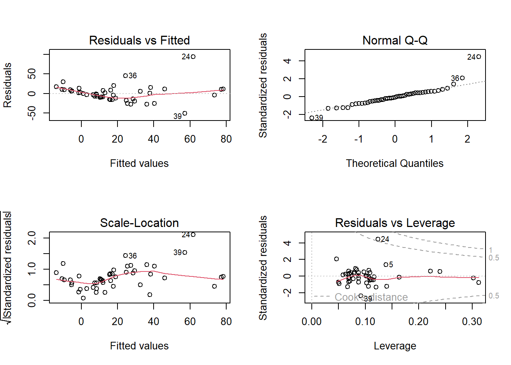
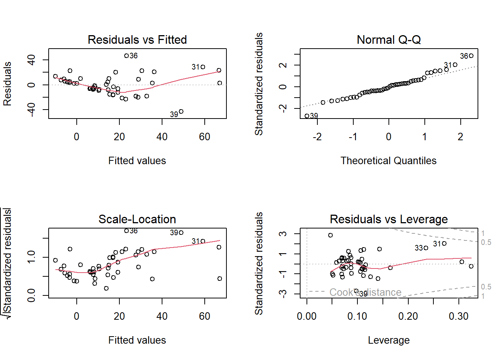
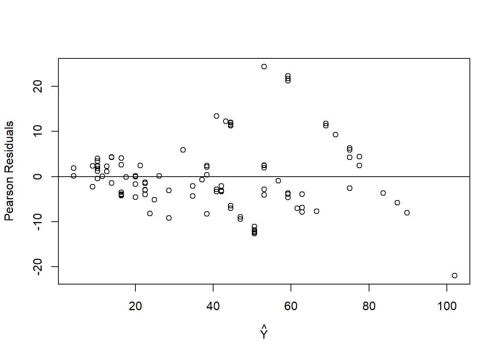

See Canvas for HW #5 assignment due date. Complete all of the following problems. Ideally, the theoretical problems should be answered in a Markdown cell directly underneath the question. If you don’t know LaTex/Markdown, you may submit separate handwritten solutions to the theoretical problems. Please do not turn in messy work. Computational problems should be completed in this notebook (using the R kernel is preferred). Computational questions may require code, plots, analysis, interpretation, etc. Working in small groups is allowed, but it is important that you make an effort to master the material and hand in your own work.
A. Theoretical Problems
A.1 Association studies given causal language?
Sometimes, researchers using non-causal models with observational data are careful to use associative, non-causal language. In some cases, these studies are picked up by media outlets and incorrectly interpreted causally.
Other times, researchers themselves are unintentionally using causal language with non-causal models and observational data.
[20 points] Find a science or social science study reported in the news. Podcasts like Hidden Brain might be useful here! Does the report of the study make reference to a causal relationship? If so, based on the actual study, do you think that the causal claims are justified? Does it use phrases like “\(X\) is associated with \(Y\)”? Or “\(X\) causes \(Y\)” ?…
Answers will vary.
B. Computational Problems
B.1 (35 Points)
For the teengamb data, fit a model with gamble as the response and the other variables as predictors. Look for violations of:
[5 points] Constant Variance
[5 points] Normality
[5 points] Linearity
[5 points] Correlations
[5 points] Measurement validity
STAT 5510 Only [10 points]: Look for (a) outliers, (b) leverage points, and (b) potentially influential points. This part of the problem requires some self-study about defining and identifying leverage points, and describing the relationship between leverage and influence. Chapter 6 of Linear Models with R (pdf on Canvas) may help!
sex status income verbal
Min. :0.0000 Min. :18.00 Min. : 0.600 Min. : 1.00
1st Qu.:0.0000 1st Qu.:28.00 1st Qu.: 2.000 1st Qu.: 6.00
Median :0.0000 Median :43.00 Median : 3.250 Median : 7.00
Mean :0.4043 Mean :45.23 Mean : 4.642 Mean : 6.66
3rd Qu.:1.0000 3rd Qu.:61.50 3rd Qu.: 6.210 3rd Qu.: 8.00
Max. :1.0000 Max. :75.00 Max. :15.000 Max. :10.00
gamble
Min. : 0.0
1st Qu.: 1.1
Median : 6.0
Mean : 19.3
3rd Qu.: 19.4
Max. :156.0
### BEGIN SOLUTION HERElmod2 =lm(gamble ~ ., data = teengamb)summary(lmod2)
Call:
lm(formula = gamble ~ ., data = teengamb)
Residuals:
Min 1Q Median 3Q Max
-51.082 -11.320 -1.451 9.452 94.252
Coefficients:
Estimate Std. Error t value Pr(>|t|)
(Intercept) 22.55565 17.19680 1.312 0.1968
sex -22.11833 8.21111 -2.694 0.0101 *
status 0.05223 0.28111 0.186 0.8535
income 4.96198 1.02539 4.839 1.79e-05 ***
verbal -2.95949 2.17215 -1.362 0.1803
---
Signif. codes: 0 '***' 0.001 '**' 0.01 '*' 0.05 '.' 0.1 ' ' 1
Residual standard error: 22.69 on 42 degrees of freedom
Multiple R-squared: 0.5267, Adjusted R-squared: 0.4816
F-statistic: 11.69 on 4 and 42 DF, p-value: 1.815e-06
par(mfrow =c(2,2)); plot(lmod2)

par(mfrow =c(1,2)) #halfnorm(residuals(lmod2)) ### END SOLUTION HERE
Constant Variance: The residual vs. fitted plot provides some evidence that the constant variance assumption is violated. For small fitted values, variability in the residuals is low, but variability increases as the fitted values increase.
Normality: Piints 24, 36, and 39 deviate considerably from the dotted line, suggesting that the data don’t come from a normal distribution.
Linearity: The residual vs. fitted plot appears to have a linear trend, suggesting that perhaps an additional predictor (or function of an existing predictor) would help better explain systematic varability in the response.
STAT 5510 Only: Look for (a) outliers, (b) leverage points, and (b) potentially influential points. Points 24 (and maybe 39) may be considered an outlier(s). Point 24 has a high Cook’s distance, which suggests that that point is a leverage point and is potentially influential. We also note that, on a half-normal qq plot of the residuals, point 24 is identified as an outlier (and potentially influential). Below, we remove point 24 from the dataset and notice that the fit (parameters) changes substantially.
teengamb2 = teengamb[-24,]lmod3 =lm(gamble ~ ., data = teengamb2)summary(lmod3)
Call:
lm(formula = gamble ~ ., data = teengamb2)
Residuals:
Min 1Q Median 3Q Max
-42.999 -8.102 -0.491 8.600 46.688
Coefficients:
Estimate Std. Error t value Pr(>|t|)
(Intercept) 7.6306 12.9251 0.590 0.5582
sex -16.2986 6.1335 -2.657 0.0112 *
status 0.1739 0.2083 0.835 0.4088
income 4.3312 0.7636 5.672 1.26e-06 ***
verbal -1.8019 1.6137 -1.117 0.2707
---
Signif. codes: 0 '***' 0.001 '**' 0.01 '*' 0.05 '.' 0.1 ' ' 1
Residual standard error: 16.74 on 41 degrees of freedom
Multiple R-squared: 0.5682, Adjusted R-squared: 0.526
F-statistic: 13.49 on 4 and 41 DF, p-value: 4.225e-07
par(mfrow =c(2,2)); plot(lmod3)

B.2 (45 Points)
Researchers at the National Institutes of Standards and Technology (NIST) collected pipline data on ultrasonic measurements of the depth of defects in the Alaska pipeline in the field. The depths of the defects were then remeasured in the laboratory. The laboratory measurements are more accurate than the field measurements, but more time consuming and expensive. We want to develop a regression model for correcting the in field measurements.
B.2 (a) [10 points] Fit a regression model where Lab is the response and Field is the predictor and save this model as lmodPipeline. Check for non-constant variance.
Field Lab Batch
Min. : 5.00 Min. : 4.30 Min. :1.000
1st Qu.:18.00 1st Qu.:18.35 1st Qu.:2.000
Median :35.00 Median :38.00 Median :3.000
Mean :33.58 Mean :39.10 Mean :3.234
3rd Qu.:46.50 3rd Qu.:55.55 3rd Qu.:5.000
Max. :85.00 Max. :81.90 Max. :6.000
### BEGIN SOLUTION HERElmodPipeline =lm(Lab ~ Field, data = pipeline)summary(lmodPipeline)
Call:
lm(formula = Lab ~ Field, data = pipeline)
Residuals:
Min 1Q Median 3Q Max
-21.985 -4.072 -1.431 2.504 24.334
Coefficients:
Estimate Std. Error t value Pr(>|t|)
(Intercept) -1.96750 1.57479 -1.249 0.214
Field 1.22297 0.04107 29.778 <2e-16 ***
---
Signif. codes: 0 '***' 0.001 '**' 0.01 '*' 0.05 '.' 0.1 ' ' 1
Residual standard error: 7.865 on 105 degrees of freedom
Multiple R-squared: 0.8941, Adjusted R-squared: 0.8931
F-statistic: 886.7 on 1 and 105 DF, p-value: < 2.2e-16
plot(fitted(lmodPipeline), resid(lmodPipeline, type ="pearson"), xlab =expression(hat(Y)), ylab ="Pearson Residuals"); abline(0,0)

### END SOLUTION HERE
The Pearson residuals are a type of standardized residual. A plot of the Pearson residuals against the fitted values provides evidence of nonconstant variance.
B.2 (b) [10 points] Sometimes transforming the response and predictor helps in stabilizing variance. Find a transformation on Lab and/or Field so that in the transformed scale the relationship is approximately linear with constant variance. Restrict your choice of transformation to square root, log, and inverse. Save your transformed variables as pipeline$LabTransform and pipeline$FieldTransform. Then, regress the transformedLab variable (repsonse) onto the transformed Field variable (predictor), and save this as lmodTr.
B.2 (c) [5 points] Now let’s try weighted least squares. The code below splits the range of Field into 12 groups of size nine (except for the last goup which has only eight values). Within each group, we compute the variance of Lab as varlab and the mean of Field as meanfield. Write comments for each line of the code to demonstrate what each line is doing.
i =order(pipeline$Field); #index of values in ordernpipe = pipeline[i,]; #data ordered according to the field variable ff =gl(12,9)[-108]; #generates a factor of 12 levels with 9 replications (removing point 108)meanfield =unlist(lapply(split(npipe$Field,ff),mean)); #mean of the field variable within each of the 12 groupsvarlab =unlist(lapply(split(npipe$Lab,ff),var)) #variance of the field variable within each of the 12 groups
B.2 (d) [20 points] Suppose that the variance in the repsonse is linked to the predictor in the following way: \[ Var(Lab) = a_0Field^{a_1}.\] Use simple linear regression on (transformations of) varlab and meanfield to estimate \(a_0\) and \(a_1\). Call this regression lmodVar.Use these estimates to perform weighted least squares where the weights are the inverse of the variance of Lab. Call this regression lmodwls. Print a summary of this model and comment on the fit.